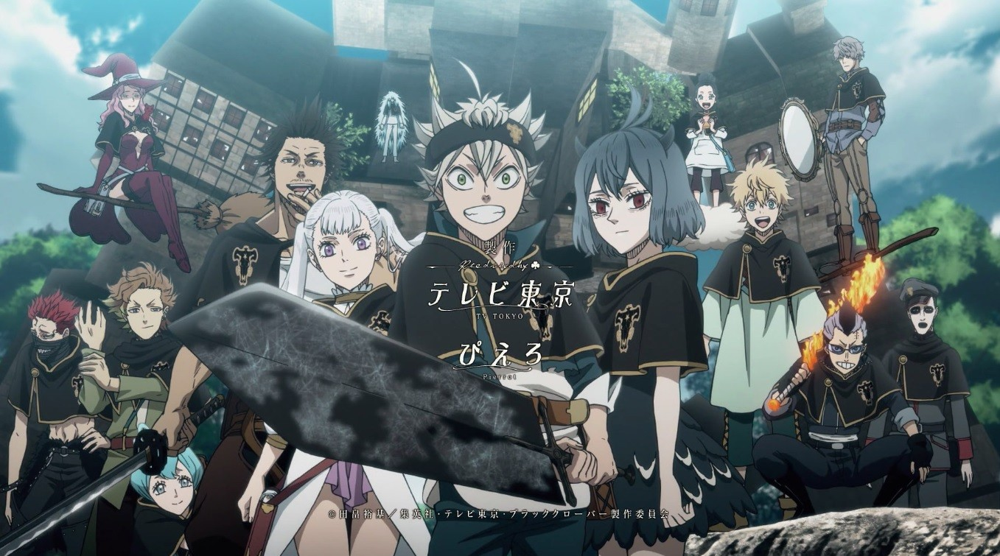

Black Clover
Asta et Yuno ont été abandonnés dans la même église le même jour. Élevés ensemble comme enfants, ils ont appris à connaître le "Roi Sorcier" - un titre donné au mage le plus fort du royaume - et ont promis qu'ils seraient en compétition les uns contre les autres pour le poste du prochain Roi Sorcier. Cependant, en grandissant, la différence flagrante entre eux est devenue évidente. Alors que Yuno est capable d'utiliser la magie avec un pouvoir et un contrôle incroyables, Asta ne peut pas du tout utiliser la magie et tente désespérément d'éveiller ses pouvoirs en s'entraînant physiquement. Lorsqu'ils atteignent l'âge de 15 ans, Yuno reçoit un spectaculaire Grimoire avec un trèfle à quatre feuilles, tandis qu'Asta ne reçoit rien. Cependant, peu de temps après, Yuno est attaqué par une personne nommée Lebuty, dont le but principal est d'obtenir le Grimoire de Yuno. Asta essaie de combattre Lebuty, mais il est surpassé. Bien que sans espoir et au bord de la défaite, il trouve la force de continuer quand il entend la voix de Yuno. Libérant ses émotions intérieures dans une rage, Asta reçoit un trèfle à cinq feuilles Grimoire, un "trèfle noir" lui donnant assez de puissance pour vaincre Lebuty. Quelques jours plus tard, les deux amis partent dans le monde, cherchant tous deux le même objectif: devenir le roi sorcier!
 Il y a bien longtemps, le tristement célèbre Gol D. Roger était le pirate le plus fort et le plus puissant des mers. Alors qu'il était sur le point d'être exécuté, il a révélé qu'il cachait toute sa richesse, y compris le trésor légendaire connu sous le nom de One Piece, sur une île au bout de la Grand Line - une mer perfide et vraiment imprévisible. Monkey D.Luffy est un jeune homme fougueux, énergique et un peu stupide avec un très grand rêve: trouver One Piece et devenir le roi des pirates! Cependant, Luffy n'est pas un garçon ordinaire, car quand il était plus jeune, il a mangé l'un des fruits du diable et a acquis son pouvoir pour devenir un homme en caoutchouc. Maintenant, dans ce grand âge de pirates, Luffy entreprend de rassembler un équipage et de naviguer vers la mer la plus dangereuse du monde afin de pouvoir réaliser son rêve ... et peut-être même son appétit!
Il y a bien longtemps, le tristement célèbre Gol D. Roger était le pirate le plus fort et le plus puissant des mers. Alors qu'il était sur le point d'être exécuté, il a révélé qu'il cachait toute sa richesse, y compris le trésor légendaire connu sous le nom de One Piece, sur une île au bout de la Grand Line - une mer perfide et vraiment imprévisible. Monkey D.Luffy est un jeune homme fougueux, énergique et un peu stupide avec un très grand rêve: trouver One Piece et devenir le roi des pirates! Cependant, Luffy n'est pas un garçon ordinaire, car quand il était plus jeune, il a mangé l'un des fruits du diable et a acquis son pouvoir pour devenir un homme en caoutchouc. Maintenant, dans ce grand âge de pirates, Luffy entreprend de rassembler un équipage et de naviguer vers la mer la plus dangereuse du monde afin de pouvoir réaliser son rêve ... et peut-être même son appétit! Lucy est une jeune fille de 17 ans qui veut devenir une mage à part entière. Un jour, en visitant la ville de Harujion, elle rencontre Natsu, un jeune homme qui tombe facilement malade par tout type de transport. Mais Natsu n'est pas n'importe quel enfant ordinaire, il est membre de l'une des guildes de mages les plus infâmes du monde: Fairy Tail.
Lucy est une jeune fille de 17 ans qui veut devenir une mage à part entière. Un jour, en visitant la ville de Harujion, elle rencontre Natsu, un jeune homme qui tombe facilement malade par tout type de transport. Mais Natsu n'est pas n'importe quel enfant ordinaire, il est membre de l'une des guildes de mages les plus infâmes du monde: Fairy Tail. Asta et Yuno ont été abandonnés ensemble dans la même église et sont inséparables depuis. En tant qu'enfants, ils se feraient concurrence pour voir qui deviendrait empereur mage.
Asta et Yuno ont été abandonnés ensemble dans la même église et sont inséparables depuis. En tant qu'enfants, ils se feraient concurrence pour voir qui deviendrait empereur mage. Le jeune Gon rêve de suivre le chemin de son père et de devenir un chasseur, une classe d'élite d'aventuriers aux compétences légendaires. Mais pour obtenir la note, il devra d'abord réussir l'examen de qualification de chasseur extrêmement difficile et dangereux.
Le jeune Gon rêve de suivre le chemin de son père et de devenir un chasseur, une classe d'élite d'aventuriers aux compétences légendaires. Mais pour obtenir la note, il devra d'abord réussir l'examen de qualification de chasseur extrêmement difficile et dangereux.